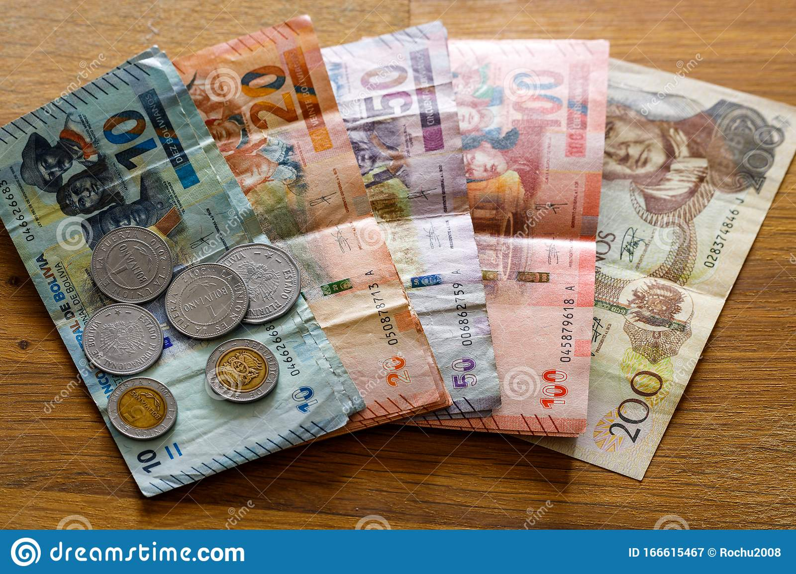
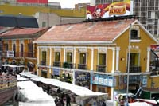

Moneda y cambio de divisas en Bolivia
| |||
La moneda de Bolivia es el BOLIVIANO (Bs 1 = 100 centavos). Billetes: 5, 10, 20, 50, 100, 200 Bolivianos. Monedas: 1 y 2 Bolivianos y 5, 10, 20 y 50 centavos. Billetes y monedas de curso legal en Bolivia | |||
Cambiar moneda / Casas de cambioEn todas las ciudades de Bolivia es posible cambiar dólares y euros. Existen numerosas casas de cambio, además de los bancos. También en las zonas bancarias hay personas en la calle que realizan el cambio, aunque esta última opción es recomendable sólo para casos de urgencia o cambio de poco dinero. En las ciudades del sur de Bolivia y Potosí también es posible cambiar pesos argentinos y chilenos. Pero el cambio no es favorable para el visitante. Hacer click para Ver: |  |
||
|---|---|---|---|
Cheques de Viajeros American ExpressEn bancos y casas de cambio es posible cambiar cheques de viajeros. Algunos sitios cobran una comisión por la operación. Teléfono para consultas o denuncias de robo o extravío de cheques. Línea gratuita en USA: (1) 801 964 6665 | |||
Cajeros AutomáticosEn Bolivia la mayoría de los bancos cuentan con redes de cajeros automáticos. Los cajeros tienen muy buena presencia en las principales ciudades. En ellos se puede extraer Bolivianos. Bancos de BoliviaBanco Mercantil Santa Cruz (Cambio de moneda dólares y euros, cajeros automático y cheques de viajeros). Banco de Credito (Cambio de moneda dólares y euros, cajeros automático y cheques de viajeros). Banco Union (Cambio de moneda dólares y euros, cajeros automático y cheques de viajeros). Banco Nacional de Bolivia (Cambio de moneda dólares y euros, cajeros automático y cheques de viajeros). Banco Ganadero (Cambio de moneda dólares y euros, cajeros automático y cheques de viajeros). Horario Bancario: Lunes a viernes (8:30 horas a 18:00 horas, con suspensión entre las 12:00 y las 14:30). |
| ||